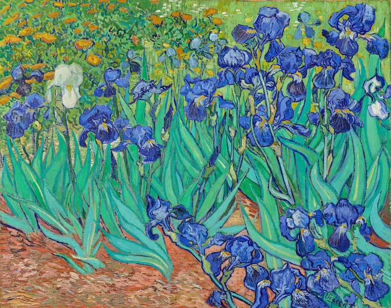
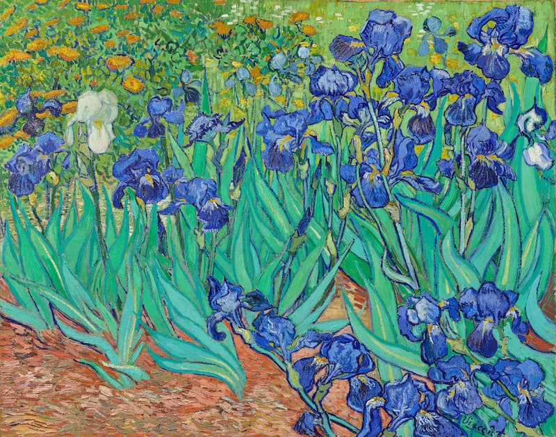
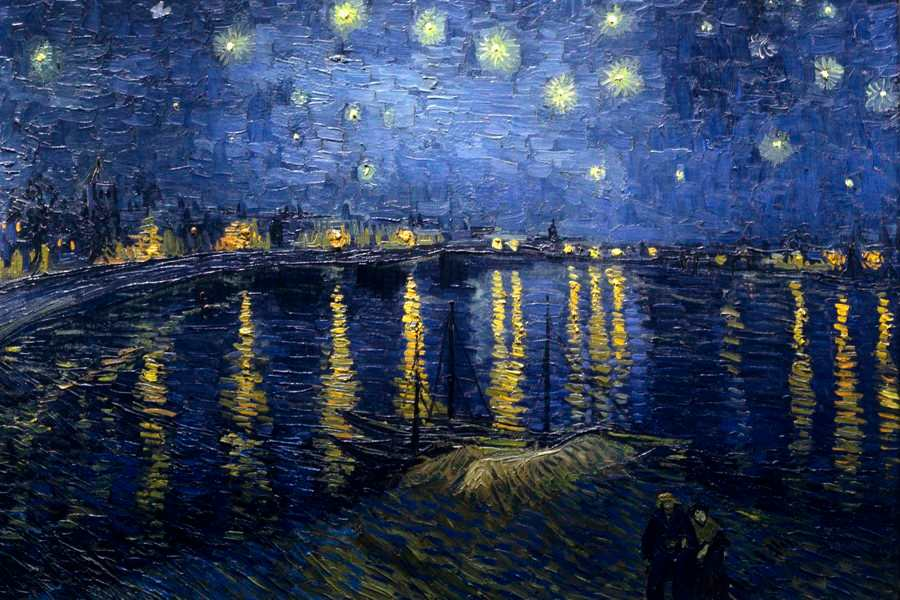
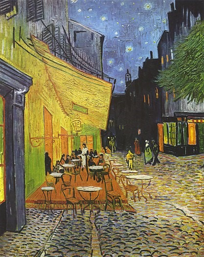
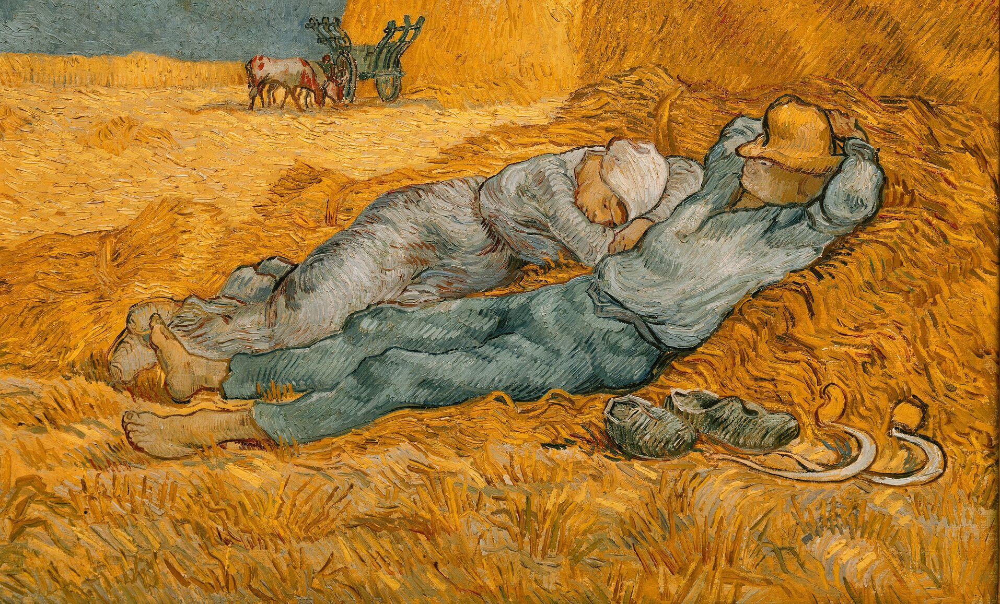
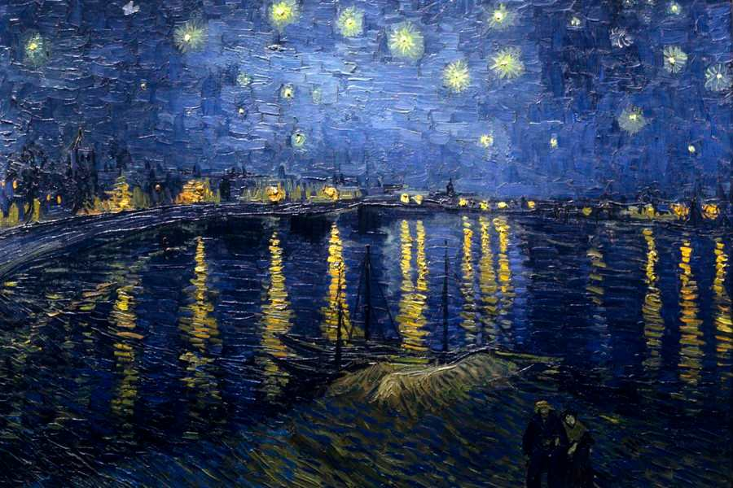
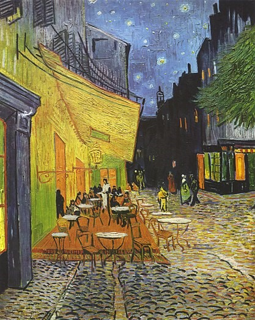
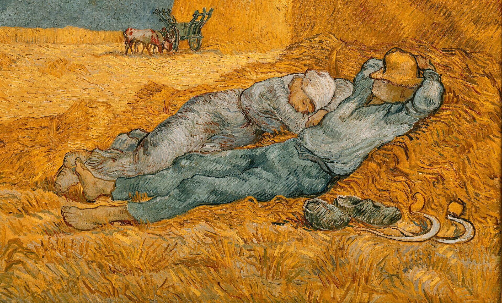

Vincent Van Gogh
Vincent Van Gogh è stato un pittore tanto geniale quanto incompreso in vita, che è diventato famoso solo dopo la sua morte avvenuta in circostanze misteriose nel 1890. Nonostante abbia iniziato a dipingere tardi, all'età di 27 anni, Van Gogh ha lasciato oltre 900 dipinti e 1000 disegni, ma anche schizzi e appunti. La sua vita breve, intensa e tormentata, assomiglia a un pellegrinaggio verso una mèta, ambita quanto sconosciuta. Egli stesso scrive: «Noi siamo dei pellegrini, la nostra vita è un lungo cammino, un viaggio dalla terra al cielo», un viaggio difficile, tortuoso, sempre in salita, che non ammette soste, eppure lieto, animato da un ardore interno che conduce verso una luce forte, sicura, un faro nell'oscurità.
 

 




